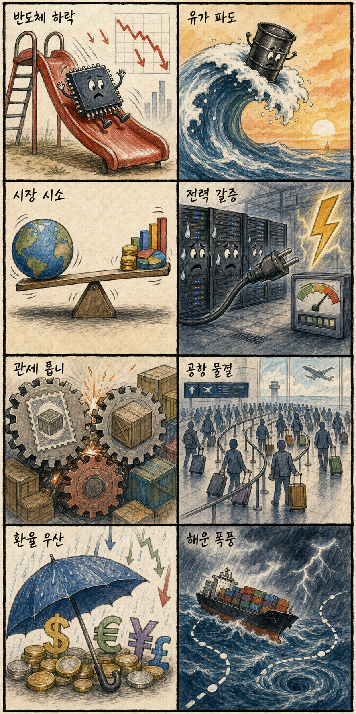
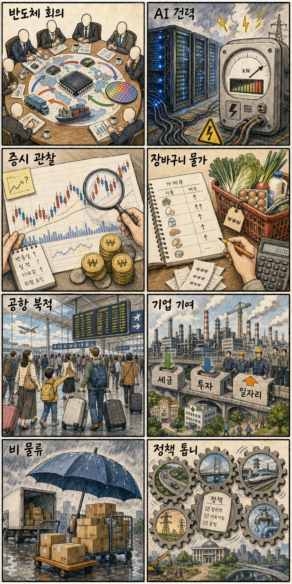

01
삼성전자 급락 충격에 뉴욕증시 반도체도 와르르, 유가 5% 뛰며 상승 [월가월부]
내용요약 삼성전자발 반도체 불안이 미국 반도체주로 번졌고 국제유가 상승까지 겹쳤다는 보도입니다.
예상여파 필라델피아 반도체지수와 국내 반도체 대형주가 같은 방향으로 흔들릴 수 있습니다.
MORNING_BRIEFING_20260708
작성 시각: 2026-07-08 10:20 KST · 시장 데이터와 당일 공개 기사 재수집본
직전 미국 정규장(현지 2026-07-07)은 반도체주 급락과 국제유가 상승 부담으로 3대 지수가 동반 하락했습니다. 특히 나스닥 낙폭이 커서 국내 개장에서는 삼성전자·SK하이닉스 등 반도체 대형주와 AI 인프라 체인의 장중 수급이 핵심입니다.
| 지수 | 종가 | 전일 대비 | 한국 증시 영향 |
|---|---|---|---|
| 다우 | 52,925.15 | -0.25% | 경기민감 대형주 부담은 제한적이나 위험선호는 둔화 |
| S&P500 | 7,503.85 | -0.45% | 대형 기술주 차익실현이 코스피 투자심리 약화로 연결 |
| 나스닥 | 25,818.69 | -1.16% | AI·반도체 성장주 밸류에이션 부담 확대 |
미국 반도체 약세와 삼성전자 눈높이 부담이 국내 대형주를 압박합니다.
호르무즈·이란 이슈로 유가가 뛰며 환율과 인플레 경계가 커졌습니다.
AI 데이터센터 투자는 전력망·초고압 케이블·원전 테마로 확산 중입니다.
지수 급락 구간에서는 실적·수주가 있는 종목 중심 선별 접근이 필요합니다.
| 종목 | 전일 등락률 | 메모 |
|---|---|---|
| SK하이닉스 | -6.06% | 2,343,000원 → 2,201,000원. 미국 AI 반도체 조정과 국내 반도체 차익실현을 함께 반영. |
| HD현대일렉트릭 | -3.23% | 929,000원 → 899,000원. AI 전력망 장기 테마는 유지되지만 전일 지수 조정에 동반 약세. |
| 한화에어로스페이스 | -3.19% | 1,159,000원 → 1,122,000원. 지정학 뉴스는 우호적이나 전반적 위험회피가 단기 부담. |
| 지수 | 종가 | 전일 대비 | 해석 |
|---|---|---|---|
| 다우 | 52,925.15 | -0.25% | 헬스케어·필수소비 방어 흐름이 상대적으로 버틴 장세 |
| S&P500 | 7,503.85 | -0.45% | 반도체 조정이 지수 전반의 차익실현으로 확산 |
| 나스닥 | 25,818.69 | -1.16% | AI 랠리 지속성 의심이 커지며 성장주 부담 확대 |
전력망·초고압 케이블, 원전/SMR, 정유, 방산, 일부 방어주
반도체 대형주, 고PER AI 성장주, 항공·화학 등 유가 민감 업종, 지수 레버리지
내용요약 삼성전자발 반도체 불안이 미국 반도체주로 번졌고 국제유가 상승까지 겹쳤다는 보도입니다.
예상여파 필라델피아 반도체지수와 국내 반도체 대형주가 같은 방향으로 흔들릴 수 있습니다.
내용요약 AI 반도체주 약세로 나스닥이 크게 밀렸다는 마감 기사입니다.
예상여파 AI 랠리 지속성에 대한 의심이 커져 고PER 성장주 부담이 커질 수 있습니다.
내용요약 AI 반도체주 약세로 나스닥이 크게 밀렸다는 마감 기사입니다.
예상여파 AI 랠리 지속성에 대한 의심이 커져 고PER 성장주 부담이 커질 수 있습니다.
내용요약 반도체 급락과 함께 테슬라 등 대형 성장주 약세가 언급된 기사입니다.
예상여파 국내 2차전지와 성장주 전반의 투자심리도 함께 약해질 수 있습니다.
내용요약 다우지수 내에서는 헬스케어·필수소비가 버티고 산업재 일부가 약세였다는 보도입니다.
예상여파 방어주 선호가 강해지면 국내에서도 음식료·통신 등 저변동 업종이 상대적으로 버틸 수 있습니다.
오늘 한국 증시는 “반도체 눈높이 조정”과 “AI 데이터센터 전력망 수주”가 동시에 작용합니다. 지수는 반도체 대형주 부담을 먼저 반영하되, 대한전선·전력기기·원전·방산처럼 뉴스가 붙은 테마는 장중 상대강도를 보일 수 있습니다.
| 한국 종목 | 연결 이유 | 단기 확인 포인트 |
|---|---|---|
| 대한전선 | 호주 AI 데이터센터 전력망 450억원 수주 보도로 AI 인프라와 전력망 테마가 직접 연결됩니다. | 초고압 케이블 수주 뉴스 후 거래대금 유지, 전력기기 동반 강세 여부 |
| HD현대일렉트릭 | AI 데이터센터 전력 수요와 전력망 병목이 장기 수주 기대를 유지시킵니다. | 전일 조정 이후 기관·외국인 순매수 전환 여부 |
| 한화에어로스페이스 | 중동·나토·우크라이나 뉴스가 방산 수출과 안보 테마를 자극합니다. | 유럽 안보 뉴스, 방산주 내 상대강도, 환율 효과 |
삼성전자·SK하이닉스 외국인 매매와 코스피 낙폭 축소 여부
원/달러 환율 1520원대 안착 여부와 유가 관련주 흐름
대한전선 수주 뉴스가 전력기기·원전까지 확산되는지 점검
나스닥 선물 반등 여부가 국내 성장주 반등의 선행 신호
핵심 요약: AI 인프라 경쟁은 반도체에서 데이터센터 전력망, 초고압 케이블, 원전·SMR, SI 구축 계약까지 넓어지고 있습니다.
내용요약 SK텔레콤의 대규모 AI 데이터센터 구상과 전력비 부담을 함께 짚은 기사입니다. AI 인프라 경쟁이 통신·전력·데이터센터 비용 구조 문제로 확장되고 있습니다.
예상여파 전력기기·전선·원전·데이터센터 운영주에는 수주 기대와 비용 부담이 동시에 반영될 수 있습니다.
내용요약 대한전선이 호주 AI 데이터센터 전력망 프로젝트를 약 450억원 규모로 수주했다는 보도입니다. AI 데이터센터 투자 확대가 초고압 전력 인프라 발주로 이어지고 있습니다.
예상여파 대한전선·HD현대일렉트릭 등 전력 인프라 밸류체인의 장중 수급이 강해질 수 있습니다.
내용요약 AI 데이터센터 전력 수요가 원전·SMR 투자 논리를 자극하고 있다는 내용입니다. 전력 공급 안정성이 AI 인프라의 병목으로 부각되는 흐름입니다.
예상여파 원전·전력설비·송배전 관련주는 AI 테마와 방어적 에너지 테마가 겹치는 구간입니다.
내용요약 씨이랩·데이타솔루션이 삼성SDS와 대규모 AI 데이터센터 구축 공급 계약을 맺었다는 보도입니다. 국내 AI 인프라 구축이 소프트웨어·시스템 통합 영역까지 확산되고 있습니다.
예상여파 AI 인프라가 반도체뿐 아니라 SI·데이터 솔루션 종목으로 확산되는지 살펴야 합니다.
내용요약 반도체주 급락에도 엔비디아 콜옵션 수요가 집중됐다는 기사입니다. 현물 주가 조정과 별개로 AI 대표주 반등 베팅은 유지되는 모습입니다.
예상여파 국내 HBM·AI 반도체 대형주는 장초반 약세 후 옵션·선물 심리에 따른 되돌림 가능성도 있습니다.
핵심 요약: 중동 리스크와 유가 상승, 나토·우크라이나 안보 뉴스가 위험자산 선호를 누르고 방산·에너지 테마를 자극합니다.
내용요약 이란 관련 지정학 리스크와 호르무즈 공급 불안으로 국제유가가 3%대 상승했다는 보도입니다. 에너지 가격 불안이 다시 인플레이션 변수로 떠올랐습니다.
예상여파 정유·조선·해운은 테마 수급이 붙을 수 있고, 항공·화학 등 원가 민감 업종은 부담을 받을 수 있습니다.
내용요약 미국의 이란 보복 공습 재개 보도로 중동 전면전과 유가 추가 급등 우려가 커졌습니다. 지정학 리스크가 위험자산 선호를 누르는 재료입니다.
예상여파 환율 상승과 외국인 위험회피가 국내 증시 변동성을 키울 수 있습니다.
내용요약 젤렌스키 대통령이 우크라이나의 나토 편입 필요성을 강조했고 러시아는 목표 달성을 막지 못한다고 맞섰습니다. 유럽 안보 긴장이 장기화되는 구도입니다.
예상여파 방산·에너지 안보 관련주는 관심을 받을 수 있으나 지수 전체에는 부담 요인입니다.
내용요약 나토 사무총장이 인도·태평양과 유럽 안보를 하나의 축으로 보고 중국·북한 대응 협력을 강조했습니다. 안보 협력이 지역을 넘어 연결되는 흐름입니다.
예상여파 방산·사이버보안·우주항공 테마의 정책 모멘텀을 점검할 필요가 있습니다.
내용요약 나토 회의 시기에 우크라이나가 대규모 드론 공격을 감행했다는 보도입니다. 드론·무인전이 전장 핵심 변수로 계속 부각되고 있습니다.
예상여파 국내 방산주 중 드론·정밀타격·항공우주 관련주의 뉴스 민감도가 높아질 수 있습니다.

“오늘은 조심조심”
“오늘은 조심조심”
“오늘은 조심조심”
“오늘은 조심조심”
“오늘은 조심조심”
“오늘은 조심조심”
“오늘은 조심조심”
“오늘은 조심조심”
핵심 요약: 삼성전자 실적 기대와 주가 급락, 반도체·전자부품 약세, 환율 부담이 국내 증시의 중심 이슈입니다.
내용요약 삼성전자가 세계 1위 실적 기대를 받았지만 외국인 매도와 주가 급락이 맞물렸다는 분석 기사입니다. 실적보다 높아진 기대치와 수급이 주가를 흔드는 국면입니다.
예상여파 삼성전자·SK하이닉스가 지수 방향을 좌우하므로 외국인 순매매와 장중 반등 여부가 핵심입니다.
내용요약 반도체·지주·전자부품 업종 약세로 코스피와 코스닥이 3거래일 연속 하락 출발했다는 오전 시황입니다. 미국 반도체 조정이 국내 성장주 전반으로 번진 흐름입니다.
예상여파 개장 후 낙폭 축소 여부와 2차전지·바이오 등 대체 수급 이동을 봐야 합니다.
내용요약 미국 반도체 급락 여파로 코스피가 7400선 약세 출발했고 환율은 1520원대로 보도됐습니다. 환율과 반도체 수급이 동시에 부담으로 작용하고 있습니다.
예상여파 원/달러 환율이 안정되지 않으면 외국인 매도 압력이 이어질 수 있습니다.
내용요약 삼성전자 실적을 두고 긍정론과 눈높이 부담론이 엇갈린다는 기사입니다. 절대 실적보다 향후 이익 증가 속도와 밸류에이션이 쟁점입니다.
예상여파 반도체 대형주의 반등은 실적 숫자보다 컨센서스 상향 여부에 달려 있습니다.
내용요약 삼성전자 최대 실적에도 주가가 급락했고 조정이 기회인지에 대한 해석이 제시됐습니다. 실적 발표 이후 차익실현과 저가매수 논리가 맞서는 구간입니다.
예상여파 장중 기관·외국인 수급이 플러스로 전환되는지 여부가 단기 방향을 가릅니다.

“오늘은 조심조심”
“오늘은 조심조심”
“오늘은 조심조심”
“오늘은 조심조심”
“오늘은 조심조심”
“오늘은 조심조심”
“오늘은 조심조심”
“오늘은 조심조심”